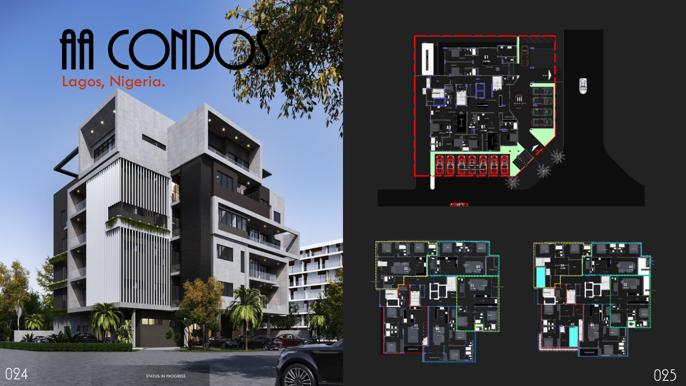
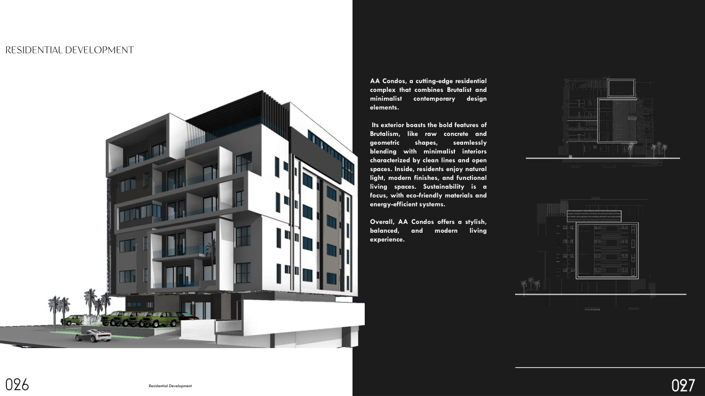
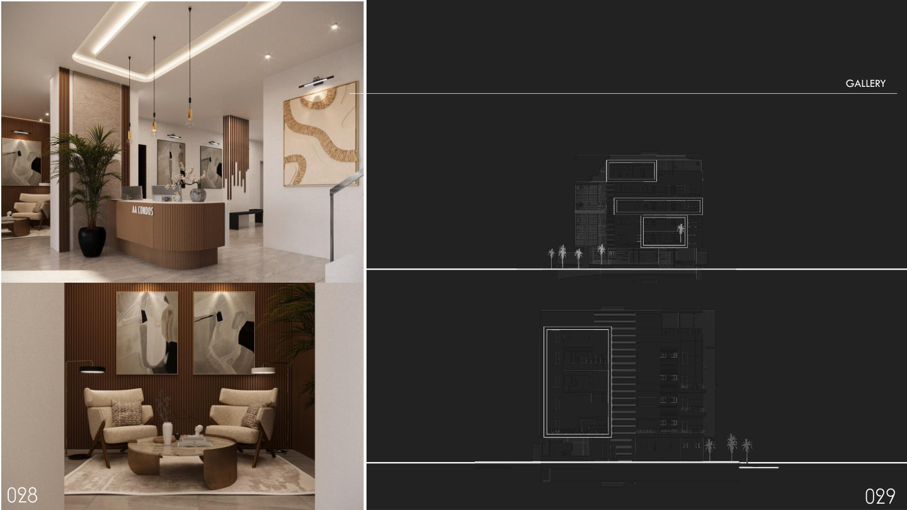

Residential Development · 2023–2024
AA Condos
A residential complex combining Brutalist massing with minimalist contemporary interiors.
Raw concrete, geometric forms, clean lines and open spaces are balanced with natural light, modern finishes and functional living environments. Sustainability is expressed through eco-friendly materials and energy-efficient systems.


